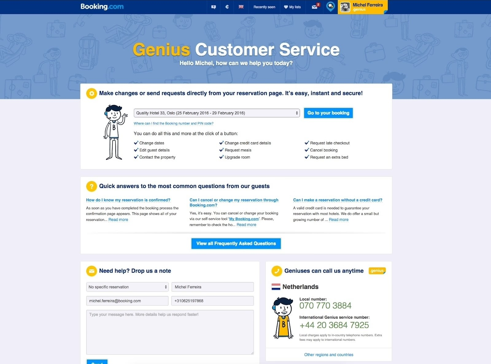
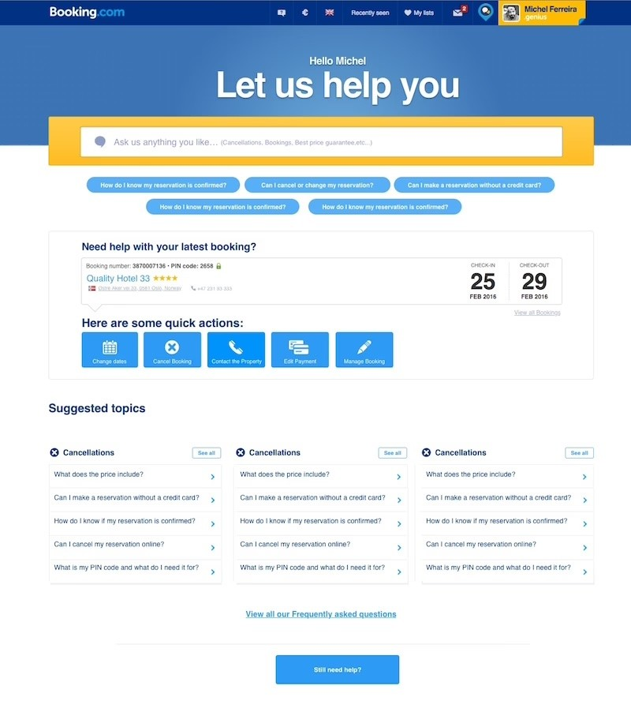

Work · Booking.com · UX Designer · 2016
Teaching users how to fish
How Booking.com’s Help Center cut costs and empowered millions of users.

The challenge
In 2016, Booking.com faced an unexpected surge in customer support tickets, reaching record highs in a period when demand was typically lower. The spike posed a significant financial challenge: Booking.com handled all support in-house, with no outsourcing.
At the heart of the issue was a Help Center that wasn’t doing its job — static, funnelling everyone to an overwhelmed phone support team, and not focused on putting the customer in control. Without intervention, Booking.com would have had to expand its in-house support team significantly.

The execution
I set out to turn the Help Center into a self-service powerhouse. I designed several versions of the solution with the team and took them to Booking’s experimentation platform, validating every assumption through A/B tests. We set out to:
- Reduce support tickets by empowering users to resolve common issues independently.
- Lower operational costs — cut the need for additional support hires.
- Improve satisfaction — streamline post-booking workflows to reduce frustration and build trust.
- Scale across platforms — one consistent experience on iOS, Android, desktop, and mobile web.

The impact
This project delivered significant cost savings and demonstrated the power of user-centered, data-driven design at scale. By focusing on actionable tools and root causes, a passive Help Center became a proactive self-service hub that empowers millions of Booking.com users every day.